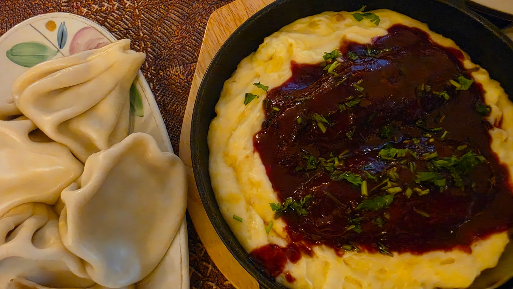
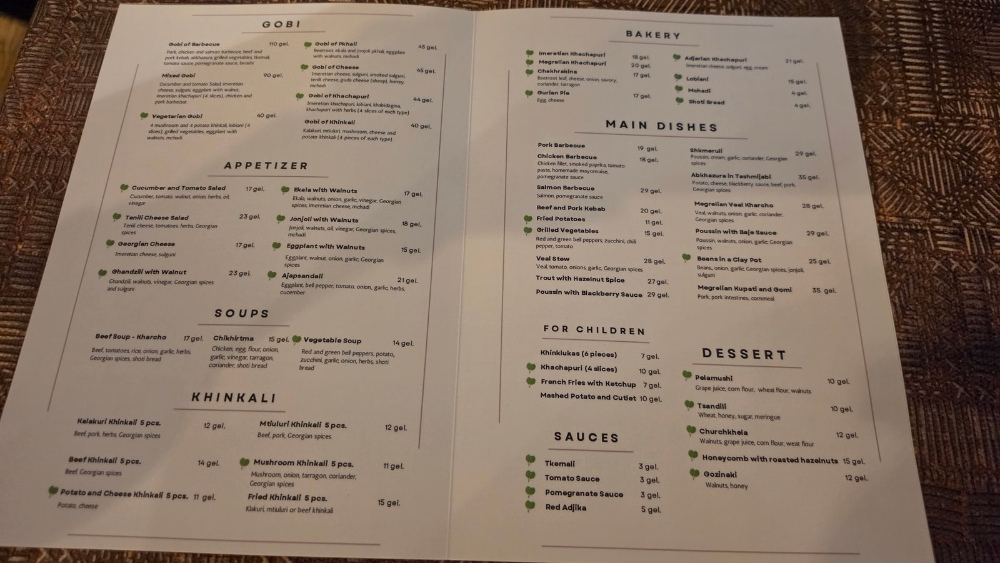
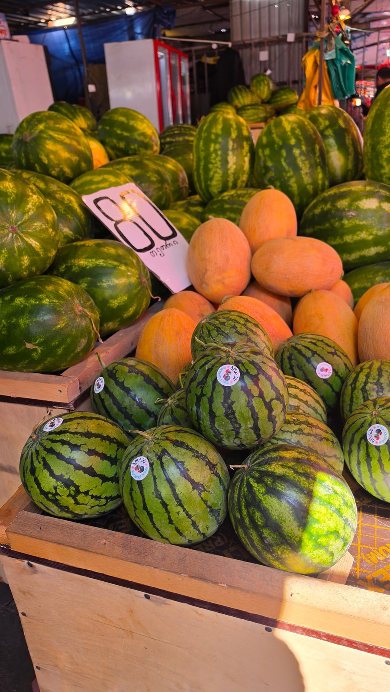

<meta charset="utf-8">
<title>조지아 여행 경비 8박 9일 — 실제 지출과 메뉴판 가격 — 나의 투자 그리고 행복한 여행</title>
<meta name="description" content="조지아 8박 9일 여행 경비: 숙소·공항 이동·교통·투어 실제 결제액과 트빌리시 식당 메뉴판 가격(힌칼리, 하차푸리, 스테이크).">
<meta name="viewport" content="width=device-width, initial-scale=1">
<link rel="canonical" href="https://danielmoon82.github.io/moon/posts/georgia-travel-cost-2026-09-14.html">
<link rel="preconnect" href="https://fonts.googleapis.com">
<link rel="preconnect" href="https://fonts.gstatic.com" crossorigin>
<link rel="stylesheet" href="https://fonts.googleapis.com/css2?family=Hahmlet:wght@400;600;800&family=IBM+Plex+Mono:wght@400;500&family=IBM+Plex+Sans+KR:wght@300;400;500;600&display=swap">

<style>
  :root{
    --paper:#F2EEE6;--surface:#FAF8F3;--surface-2:#E7E1D5;
    --ink:#191510;--ink-2:#4A4235;--ink-3:#7D7364;
    --line:#D6CEBF;--line-soft:#E4DDD0;--accent:#B06A15;--accent-bright:#C2761A;
    --up:#E5484D;--down:#3B82F6;
    --f-display:"Hahmlet",'Nanum Myeongjo',"Apple SD Gothic Neo",serif;
    --f-body:"IBM Plex Sans KR","Apple SD Gothic Neo","Malgun Gothic",sans-serif;
    --f-mono:"IBM Plex Mono","SFMono-Regular",Consolas,monospace;
    --pad:clamp(20px,5vw,64px);
  }
  @media (prefers-color-scheme:dark){
    :root:not([data-theme="light"]){
      --paper:#0B1120;--surface:#121A2C;--surface-2:#1A2439;
      --ink:#E9EEF7;--ink-2:#A9B5C9;--ink-3:#72809A;
      --line:#26314A;--line-soft:#1D2739;--accent:#E8A33D;--accent-bright:#F0B45C;
    }
  }
  *{box-sizing:border-box;}
  body{margin:0;background:var(--paper);color:var(--ink);font-family:var(--f-body);
    font-weight:300;font-size:1rem;line-height:1.75;-webkit-font-smoothing:antialiased;}
  a{color:inherit;}
  img{max-width:100%;height:auto;}
  .wrap{max-width:760px;margin:0 auto;padding-inline:var(--pad);}
  .nav{position:sticky;top:0;z-index:20;background:color-mix(in srgb,var(--paper) 88%,transparent);
    backdrop-filter:saturate(180%) blur(12px);border-bottom:1px solid var(--line);}
  .nav-in{display:flex;align-items:center;justify-content:space-between;height:58px;}
  .brand{font-family:var(--f-display);font-weight:600;font-size:1rem;letter-spacing:-.02em;text-decoration:none;}
  .back{font-family:var(--f-mono);font-size:.72rem;color:var(--ink-3);text-decoration:none;}
  .article{padding-block:clamp(40px,7vw,72px) clamp(56px,9vw,96px);}
  .eyebrow{font-family:var(--f-mono);font-size:.68rem;letter-spacing:.16em;text-transform:uppercase;
    color:var(--accent);margin:0 0 14px;}
  h1{font-family:var(--f-display);font-weight:800;font-size:clamp(1.6rem,4.4vw,2.3rem);
    line-height:1.3;letter-spacing:-.03em;margin:0 0 16px;}
  .byline{font-family:var(--f-mono);font-size:.72rem;color:var(--ink-3);
    padding-bottom:24px;border-bottom:1px solid var(--line);margin-bottom:32px;}
  h2{font-family:var(--f-display);font-weight:600;font-size:1.25rem;letter-spacing:-.02em;margin:42px 0 14px;}
  h3{font-family:var(--f-display);font-weight:600;font-size:1.05rem;letter-spacing:-.02em;
    margin:30px 0 10px;padding-top:14px;border-top:1px solid var(--line-soft);}
  h3 .code{font-family:var(--f-mono);font-size:.7rem;font-weight:400;color:var(--ink-3);margin-left:6px;}
  p{margin:0 0 18px;color:var(--ink-2);}
  ul.checks{margin:0 0 18px;padding-left:20px;color:var(--ink-2);}
  ul.checks li{margin-bottom:8px;font-size:.94rem;}
  table{width:100%;border-collapse:collapse;font-size:.88rem;margin-bottom:8px;}
  th{font-family:var(--f-mono);font-size:.66rem;letter-spacing:.06em;text-transform:uppercase;
    color:var(--ink-3);text-align:right;padding:8px 6px;border-bottom:1px solid var(--line);}
  th:first-child{text-align:left;}
  td{padding:10px 6px;border-bottom:1px solid var(--line-soft);color:var(--ink-2);}
  td.num{font-family:var(--f-mono);text-align:right;font-variant-numeric:tabular-nums;}
  td.up{color:var(--up);} td.down{color:var(--down);}
  .scroll{overflow-x:auto;}
  figure{margin:22px 0;}
  figure img{display:block;border-radius:3px;background:var(--surface-2);}
  figcaption{margin-top:8px;font-family:var(--f-mono);font-size:.68rem;color:var(--ink-3);text-align:center;}
  .note{margin-top:34px;padding:16px 18px;border-left:3px solid var(--accent);
    background:var(--surface);border-radius:0 3px 3px 0;}
  .note p{margin:0;font-size:.85rem;color:var(--ink-3);}
  .foot{border-top:1px solid var(--line);background:var(--surface);padding-block:30px 38px;}
  .foot p{margin:0;font-size:.8rem;color:var(--ink-3);}
</style>

<nav class="nav">
  <div class="wrap nav-in">
    <a class="brand" href="../index.html">나의 투자 그리고 행복한 여행</a>
    <a class="back" href="../index.html#stocks">← 시황으로</a>
  </div>
</nav>

<main class="wrap article">
  <p class="eyebrow">Market</p>
  <h1>조지아 여행 비용 기록 — 확인된 지출과 메뉴판 가격 (2026.8)</h1>
  <p class="byline">여행 · 2026-09-14 기준</p>

  <p>한 줄 요약: 숙소 1박 약 65,000원, 공항 앱 차량 약 17,000원, 대중교통 1회 1라리, 투어 3개 합계 169,500원. 식비는 조지아 식당 메뉴판 기준 1끼 1인 약 2~3만 원입니다.</p>
  <p>결제액은 여행자 본인 기록, 식비는 촬영한 메뉴판 가격입니다. 원화 환산은 조지아 중앙은행 2026년 8월 14일 환율(1라리 ≈ 543원)입니다.</p>
  <figure><figcaption>트빌리시에서 저녁으로 먹은 힌칼리 (2026.8.18 18:55 촬영)</figcaption></figure>
  <h2>먼저 결론 — 제가 확인한 지출</h2>
  <ul class="checks">
    <li>숙소 — 트빌리시 중앙역 근처 에어비앤비 신식 아파트, 1박 약 65,000원</li>
    <li>공항 → 시내 — 밤 도착, 앱 호출 차량 약 17,000원</li>
    <li>시내 → 공항 — 337번 버스 1라리(약 540원)</li>
    <li>교통카드 — 카드값 2라리 + 1일권 3라리</li>
    <li>카즈베기 투어 28,300원 / 카헤티 와인 투어 22,400원 / 아르메니아 당일 투어 118,800원</li>
    <li>식사 — 조지아 식당에서 힌칼리 5개 11~15라리, 하차푸리 18~21라리</li>
  </ul>
  <div class="note"><p>환율 기준: 조지아 중앙은행 2026년 8월 14일 환율 1,000원 = 1.8403라리. 1라리는 약 543원입니다.</p></div>
  <h2>큰 돈 — 숙소, 투어, 공항 이동</h2>
  <p>이 요금으로 8박을 계산하면 숙소비는 약 52만 원입니다. 여기에 투어 세 개(169,500원)와 공항 택시(약 17,000원)를 더하면 <b>식비와 항공권을 빼고 약 70만 원</b>입니다.</p>
  <ul class="checks">
    <li>숙소 8박(1박 약 65,000원 기준) — 약 520,000원</li>
    <li>투어 3개 — 169,500원</li>
    <li>공항 → 시내 앱 차량 — 약 17,000원</li>
    <li>합계 — 약 706,500원 (+ 대중교통, 식비, 항공권)</li>
  </ul>
  <p>숙소는 아주 깔끔한 신축 아파트였고, 지하철로 구시가지까지 10~15분이었습니다.</p>
  <div style="text-align:center;margin:30px 0"><a href="https://danielmoon82.github.io/moon/posts/tbilisi-where-to-stay-2026-09-14.html" target="_blank" rel="nofollow sponsored noopener" style="display:inline-block;padding:15px 28px;background:#E34948;color:#fff;font-weight:700;font-size:18px;text-decoration:none;border-radius:8px"><b>▶ 트빌리시 숙소 지역별 비교 보기</b></a></div>
  <h2>식비 — 조지아 식당 메뉴판 (8월 18일)</h2>
  <figure><figcaption>트빌리시 조지아 식당의 메뉴판. 가격은 라리 표기입니다 (2026.8.18 18:27 촬영)</figcaption></figure>
  <p>사진으로 찍어 온 메뉴판에서 그대로 옮긴 가격입니다.</p>
  <ul class="checks">
    <li>힌칼리 5개(고기·버섯·감자치즈 등) — 11~15라리 (약 6,000원~8,200원)</li>
    <li>하차푸리 — 이메룰리 18 / 메그룰리 20 / 아자룰리 21라리 (약 9,800원~11,400원)</li>
    <li>로비아니(콩빵) — 15라리 (약 8,200원)</li>
    <li>수프(하르초·치히르트마·채소) — 14~17라리</li>
    <li>샐러드·차가운 전채 — 15~23라리</li>
    <li>돼지·닭 바비큐 — 18~19라리</li>
    <li>시크메룰리(마늘 크림소스 닭) — 29라리 (약 15,800원)</li>
    <li>송어 — 27라리</li>
    <li>디저트 — 10~15라리 (추르츠헬라 12라리)</li>
  </ul>
  <figure><figcaption>배 모양 치즈빵 아자룰리 하차푸리, 메뉴판 가격 21라리 (2026.8.19 16:33 촬영)</figcaption></figure>
  <h2>식비 — 스테이크하우스 메뉴판 (8월 13일)</h2>
  <p>구시가지 쪽 스테이크하우스 메뉴판입니다. '모든 가격은 라리, 부가세 18% 포함'이라고 적혀 있었습니다.</p>
  <ul class="checks">
    <li>수프 — 18~20라리</li>
    <li>버거 — 43~47라리</li>
    <li>치킨 추라스코 — 43라리</li>
    <li>립아이 450g — 92라리 (약 50,000원)</li>
    <li>티본 450g — 98라리 (약 53,300원)</li>
    <li>디저트 — 18~24라리</li>
  </ul>
  <div class="note"><p>조지아 음식은 한 접시 6천~1만 6천 원 선, 스테이크 같은 서양식은 5만 원대입니다. 식비는 어떤 식당을 고르느냐에 따라 두세 배 차이가 납니다.</p></div>
  <h2>한 끼 계산해보면</h2>
  <ul class="checks">
    <li>든든한 저녁 — 힌칼리 5개(12) + 아자룰리(21) + 오이토마토 샐러드(17) = 50라리, 약 27,200원 (음료 제외)</li>
    <li>가벼운 점심 — 이메룰리 하차푸리(18) + 치히르트마 수프(15) = 33라리, 약 17,900원</li>
    <li>스테이크 저녁 — 립아이 하나만 92라리, 약 50,000원</li>
  </ul>
  <p>힌칼리와 하차푸리는 양이 많아서 둘이 가면 생각보다 적게 시켜도 됩니다. 음료 가격은 기록이 없어 빼고 계산했습니다.</p>
  <h2>교통비 — 거의 들지 않습니다</h2>
  <figure><figcaption>트빌리시 지하철 승강장 (2026.8.19 18:24 촬영)</figcaption></figure>
  <ul class="checks">
    <li>지하철·버스 1회 — 1라리, 90분 안 환승 무료</li>
    <li>1일권 — 3라리 (교통카드 2라리 필요)</li>
    <li>리케 공원 케이블카 — 2.5라리</li>
    <li>므타츠민다 푸니쿨라 — 10라리 + 전용 카드 2라리</li>
    <li>공항 앱 차량(밤) — 약 17,000원</li>
  </ul>
  <p>하루 종일 지하철과 버스를 타도 1일권 3라리, 우리 돈 1,600원 정도입니다. 교통비는 예산에서 거의 무시해도 되는 수준입니다.</p>
  <div style="text-align:center;margin:30px 0"><a href="https://danielmoon82.github.io/moon/posts/tbilisi-public-transport-2026-09-14.html" target="_blank" rel="nofollow sponsored noopener" style="display:inline-block;padding:15px 28px;background:#E34948;color:#fff;font-weight:700;font-size:18px;text-decoration:none;border-radius:8px"><b>▶ 트빌리시 대중교통 정리 보기</b></a></div>
  <h2>관광 — 돈이 안 드는 곳이 많습니다</h2>
  <figure><figcaption>트빌리시 농산물 시장의 수박과 멜론 (2026.8.19 15:02 촬영)</figcaption></figure>
  <p>구시가지 산책, 평화의 다리, 조지아의 어머니상, 자유광장, 조지아 연대기 — 트빌리시 대표 명소 상당수가 입장료가 없습니다. 돈이 드는 건 케이블카·푸니쿨라 같은 오르막 교통과 근교 투어 정도입니다.</p>
  <h2>예산 잡는 법</h2>
  <p>위 숫자로 1인 기준 하루 예산을 짜면 이렇습니다.</p>
  <ul class="checks">
    <li>숙소 — 1박 약 65,000원 (깔끔한 아파트 기준)</li>
    <li>교통 — 1일권 약 1,600원 + 가끔 앱 택시</li>
    <li>식비 — 조지아 식당 두 끼 약 3~5만 원 (음료 별도)</li>
    <li>근교 투어를 가는 날 — 2만 원대(카헤티)부터 11만 원대(아르메니아)까지 추가</li>
  </ul>
  <p>여기에 항공권과 여행자보험이 따로 듭니다. 2026년부터 조지아는 여행자보험 가입이 입국 조건이라 보험료는 꼭 예산에 넣어야 합니다.</p>
  <div style="text-align:center;margin:30px 0"><a href="https://danielmoon82.github.io/moon/posts/georgia-travel-guide-2026-09-14.html" target="_blank" rel="nofollow sponsored noopener" style="display:inline-block;padding:15px 28px;background:#E34948;color:#fff;font-weight:700;font-size:18px;text-decoration:none;border-radius:8px"><b>▶ 조지아 여행 준비 총정리(입국·보험) 보기</b></a></div>
  <h2>자주 묻는 질문</h2>
  <p><b>조지아 물가는 한국보다 싼가요?</b></p>
  <p>교통과 조지아 음식은 확실히 쌉니다. 지하철 1회 약 540원, 힌칼리 5개 6,000~8,200원입니다. 반면 스테이크하우스에 가면 립아이 한 접시가 약 5만 원으로 가격대가 확 올라갑니다.</p>
  <p><b>트빌리시 숙소비는 얼마인가요?</b></p>
  <p>제가 묵은 중앙역 근처 에어비앤비 신식 아파트는 1박 약 65,000원이었습니다. 위치와 시기에 따라 달라집니다.</p>
  <p><b>환전은 얼마나 해야 하나요?</b></p>
  <p>버스·지하철은 컨택리스 은행카드로도 탈 수 있어서 현금이 많이 필요하지는 않습니다. 다만 시장, 마슈르트카처럼 현금을 쓰는 곳이 있으니 소액은 라리로 갖고 있는 편이 좋습니다.</p>
  <p><b>투어비는 얼마나 잡아야 하나요?</b></p>
  <p>제가 낸 금액은 카헤티 22,400원, 카즈베기 28,300원, 아르메니아 118,800원이었습니다. 조지아 안 투어는 2~3만 원대, 국경을 넘는 투어는 훨씬 비쌉니다.</p>
  <h2>정리하면</h2>
  <p>조지아 8박 9일, 큰 지출(숙소 8박 계산·투어·공항 이동)은 약 70만 원입니다. 식비는 조지아 음식 위주면 하루 3~5만 원, 교통비는 거의 들지 않습니다.</p>
  <p>가장 큰 변수는 숙소 등급과 근교 투어 개수입니다. 이 두 가지를 먼저 정하면 나머지 예산은 쉽게 나옵니다.</p>
  <p style="font-size:12px;color:#999;line-height:1.6;margin-top:36px">방문 날짜와 시각은 2026년 8월 12~20일 여행 중 찍은 사진의 촬영 시각(조지아 현지 시각)으로 확인했습니다. 요금·운영 정보는 2026년 9월 13~14일에 확인한 공개 정보이며 바뀔 수 있습니다. 원화 환산은 조지아 중앙은행 2026년 8월 14일 환율(1,000원 = 1.8403라리)로 계산한 대략치입니다. 메뉴판 가격은 2026년 8월 13일·18일에 촬영한 사진에서 그대로 읽은 것입니다. 숙소·투어·공항 이동 금액은 여행자 본인의 결제액이며, 항공권·음료·보험료는 포함하지 않았습니다.</p>
</main>

<footer class="foot">
  <div class="wrap"><p>나의 투자 그리고 행복한 여행 · 투자 판단의 참고 자료일 뿐, 매수·매도를 권유하지 않습니다.</p></div>
</footer>
